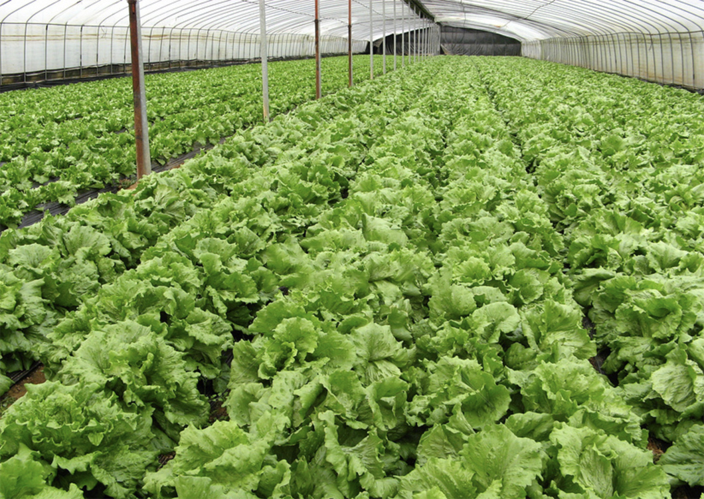
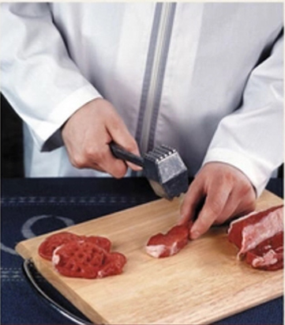
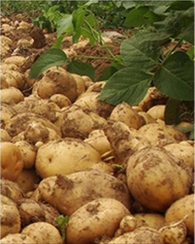
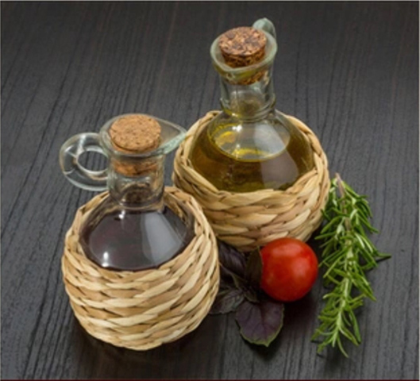

九州通居家养老的食材来自于童美农场，位于武汉江夏，占地面积达17016亩。
童美农场坐拥在群山之间，视野广阔，既可欣赏日出的奇景，也可一览晚霞的缤纷万变。
让庄稼享受阳光的滋润，让土地接受雨水的洗礼，这是农场对蔬菜土地的野性而不失关怀的照顾，蕴藏着对自然的尊重，这也是童美有机农场对“绿色”这两个字实实在在的践行。童美农场秉承品味自然、回归乡土、安全可靠的养殖标准，严禁使用化合肥料、农药及人工催熟方法，自产几十种绿色、健康的瓜果蔬菜，并采用林下“原生态”散养方法，畜养鸡鸭鱼猪。不仅为我们提供新鲜健康的食材，也进一步铸造了安全食材屏障。



好的自然环境，自然的种养方式，让食材更新鲜更健康，让老人吃的放心，吃出健康！